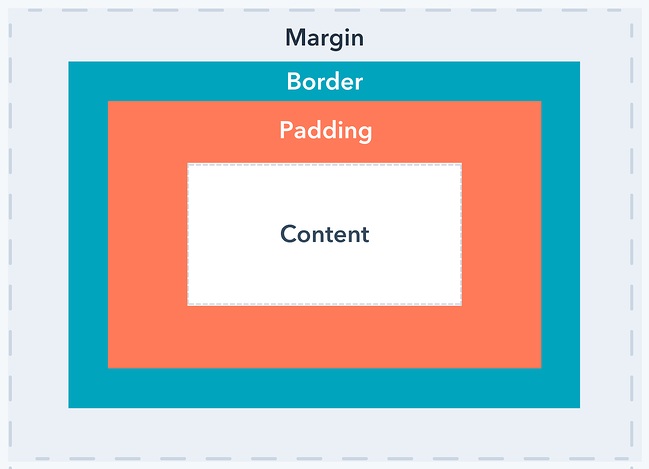

About this blog and it's author
Zak is an aspiring web developer/musician from Christchurch, New Zealand
He enjoys playing the drums, musical theatre, and ramen.
Here you will find his blog posts through the DevAcademy journey
Border vs. Margin vs. Padding - What's the difference?
Margin, padding and border. They sound like they all do the same thing, and while they are related, they have different uses in the context of CSS and are great tools to help your page look more aesthetically pleasing.
Border
We'll start with the border because its literally the border of the object. If you are familiar with using programs like Word or Excel you have probably put a border around a text box or cell. Just like in those applications we can customise the border of our element in CSS.
We can define our borber in our CSS page using .class_name {border: ;}
We can also define specific border sides by adding the specific side we want, for example: .class_name {border-top: ;} or .class_name {border-left: ;}
Once we define our border we can stylize it by changing the thickness, border style and color, for example class_name {border: 10px solid black;}
Check out w3schools for more information on borders in CSS, and more alterations you can make.
Margin
Now that we've defined our border we can use it to help us understand the margin. The margin is the space outside our border and will prevent other elements from getting closer than the defined margin. Think of it like giving your object a personal space bubble.
We can give our object a margin using class_name {margin: ;}, just like our border example we can make margins on specific sides of our object: .element_name {margin-top: ;}
Padding
Padding is essentially the opposite of the margin, it is the space on the inside of the border. It will stop your content from getting closer to your border than your defined amount of space.
We can can give our object padding using .class_name {padding: ;} and we can also define areas for specific padding, eg: .class_name {padding-top: ;}
This image will help you visualize these three concepts:

Check out this HubSpot article for more info on padding vs. margin